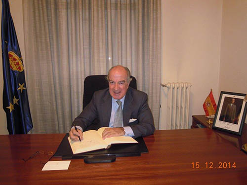
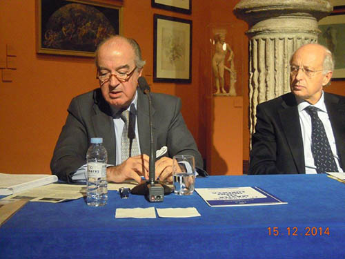

15/12/14 El prestigioso Abogado del Estado, actualmente en KPMG y que durante muchos años ha sido el Director General del Servicio jurídico del Banco Central Europeo, Excmo. Sr. D. Antonio Sáinz de Vicuña, firma en el libro de honor del Real Instituto de Estudios Europeos.
El acto tuvo lugar en la sede del Instituto, poco antes de impartir
la Lección inaugural de la 27ª. promoción del Programa Máster en Unión
Europea.

El exdirector General del Servicio jurídico del Banco Central
Europeo, imparte la Lección inaugural del 27º. Programa Máster en Unión
Europea, sobre El mercado común de los valores.
La promoción Ricardo Díez Hochleitner, que comenzó sus estudios a
finales de octubre en Zaragoza, integrada por personas procedentes de seis
carreras, siguió con gran interés la exposición del conferenciante, de un
altísimo nivel técnico.
